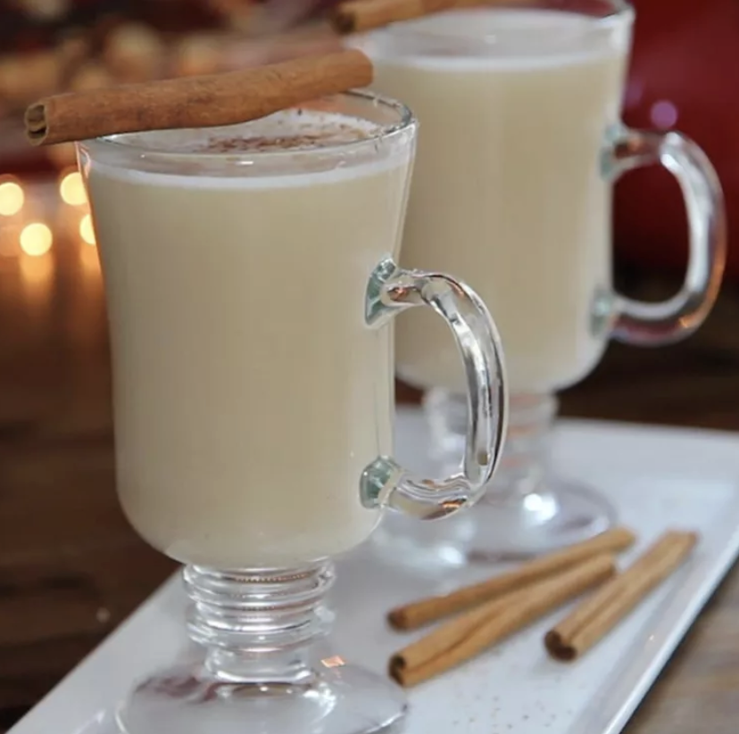

Hot Buttered Rum
Description:
This easy batter mixes up in minutes and keeps in the freezer for up to 3 months so you'll have it for the entire holiday season. All you need to make a delicious and buttery hot buttered rum cocktail is this hot buttered rum mix, rum, and boiling water. Try salted caramel ice cream instead of vanilla, or pumpkin spice instead of cinnamon and nutmeg for fun variations.
Ingredients:
- 1 pound unsalted butter
- 1 pound brown sugar
- 1 pound confectioners' sugar
- 1 quart vanilla ice cream, softened
- 1 tablespoon ground cinnamon
- 1 teaspoon ground nutmeg
Steps:
- Melt butter in a large pot over medium heat. Blend in brown sugar and confectioners' sugar until smooth.
- Remove from the heat. Add ice cream, cinnamon, and nutmeg and whisk until incorporated. Pour mixture into a plastic container, cover, and store in the freezer.
- For each serving of hot buttered rum, combine 1 tablespoon rum batter and 1 fluid ounce rum in a coffee mug. Fill the mug with boiling water and stir to combine. Sprinkle nutmeg over top if desired.